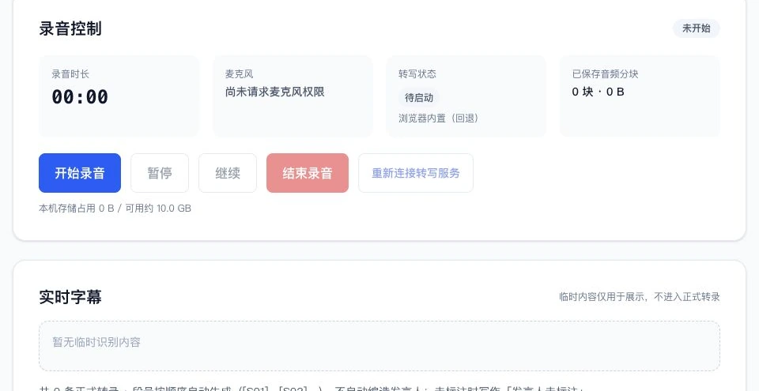
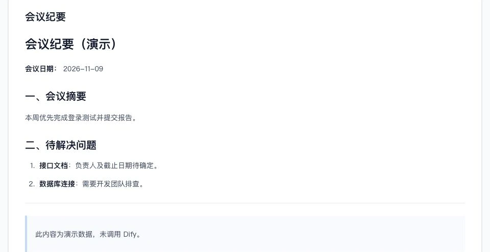
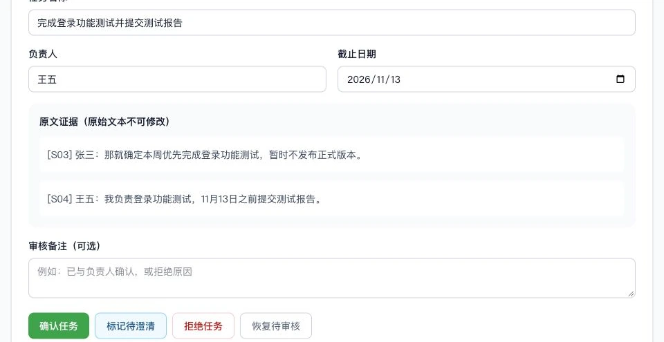
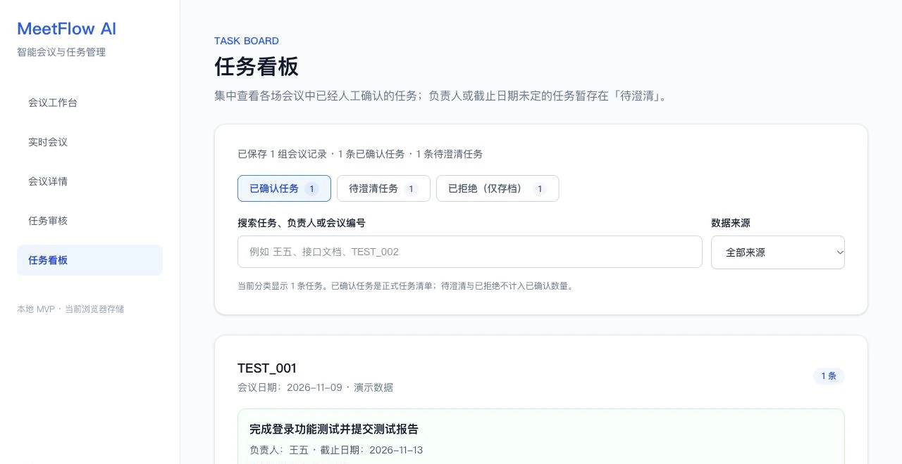

01 / 05
从转录开始整理
在工作台填写会议信息，录入带段号的转录。Dify 根据文本生成纪要和候选任务，再交给人工审核。
截图使用原项目内置示例，未调用 Dify。
产品案例 V5 本地 MVP
从实时录音、会议转写到任务提取与人工确认，让每项会议决定都有来源、有人跟进。
真实产品 · HTTPS 公网访问，模型调用需授权
01 会议之后
接口评审结束时，有人答应提交测试报告，也有人只是提了一句「接口文档需要整理一下」。两句话都该记下来，只有前一句已经有明确承诺。
场景摘自项目内置演示会议 TEST_001。
02 工作流程
会中先记录，会后核对转录和原文。AI 整理候选项，人决定哪些任务可以进入看板。
用浏览器读取电脑麦克风。
会中看字幕，句末生成定稿。
修正错字，标注发言人。
用核对后的文本生成纪要与候选任务。
按段号查看发言，核实异常引文。
确认、拒绝或待澄清，保存到本机。
03 产品界面
界面来自本地运行的原版前端。可以切换五个视图，点开查看原图。
01 / 05
在工作台填写会议信息，录入带段号的转录。Dify 根据文本生成纪要和候选任务，再交给人工审核。
截图使用原项目内置示例，未调用 Dify。

02 / 05
浏览器用电脑麦克风录音。sherpa-onnx 输出实时中文字幕，faster-whisper 生成可编辑的正式转录。
录音和正式转录保存在当前浏览器，可刷新恢复。转写无需购买 OpenAI 语音 API。

03 / 05
从历史会议找回纪要、原始转录和任务审核结果，补齐上次没有定下来的事项。
演示会议和 Dify 分析记录分开管理。

04 / 05
候选任务关联带段号的原始发言。引文无法逐字对应原文时，审核人必须选择可信证据才能确认。
可以确认、拒绝或标记待澄清，最后保存审核结果。

05 / 05
已确认任务进入正式清单。负责人或日期尚未确定的事项单独待澄清，补齐后可再次确认。
可按会议、负责人或任务名称查找当前浏览器里的记录。
04 技术实现
语音在电脑上处理。会后确认过的转录文本由 Next.js 服务端发给 Dify，录音不随分析请求上传。
Next.js · React · TypeScript · Tailwind CSS
Python · sherpa-onnx · faster-whisper
Dify · 纪要和候选任务
IndexedDB 存录音与定稿，localStorage 存会议历史与审核结果。
05 项目迭代
从处理现成的会议文本，到接入本地录音和转写，V5 把会中记录接进了原有审核流程。
先用转录生成纪要，再加入原文核实、待澄清和独立看板。
将浏览器在线识别换成本机语音服务，麦克风音频在本地处理。
让 sherpa-onnx 先出临时字幕，Whisper 专注生成正式转录。
给 IndexedDB 增加正式转录存储，把文字和人工修改随录音保留。
06 测试与边界
以下来自原项目的 V5 测试报告与 PRD。测试条件不同，结论也分开看。
Chrome 通过虚拟麦克风注入约 80 秒合成语音，首次字幕 2.82 秒，生成 8 条正式转录。另一轮 45 秒测试中，刷新后恢复 4 段转录和录音，人工修改也保留。
据 PRD，LIVE_001 真人朗读会话导出 17 条正式转录；人工修订后经 Dify 分析、审核，保存 1 条已确认任务。没有足够样本估算真人识别准确率。
faster-whisper small 在 552 字合成语音参考稿上的字符错误率为 23.0%。这是脚本基准，没有经过浏览器，不能外推到真人会议。
归档记录显示 TypeScript 检查无错误，Next.js 生产构建成功。这两项检查只验证代码与构建产物。
这是本地单用户 MVP。人名、术语和断句仍可能识别错误，需要人工核对。原版仅录电脑麦克风，暂不支持系统内录、自动区分发言人或跨设备同步；长会议及断线重连尚未完成验收。